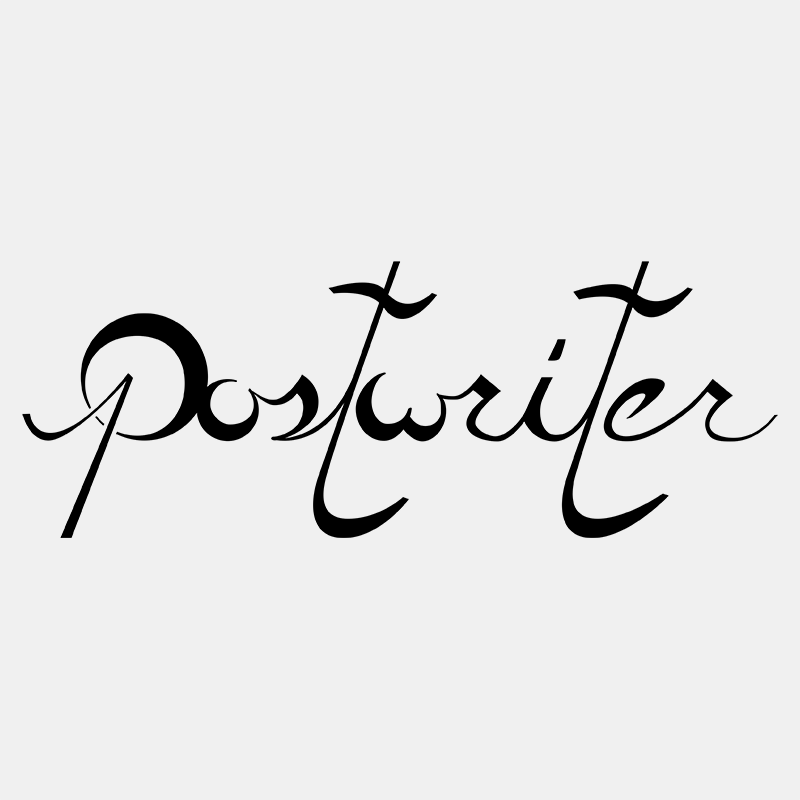
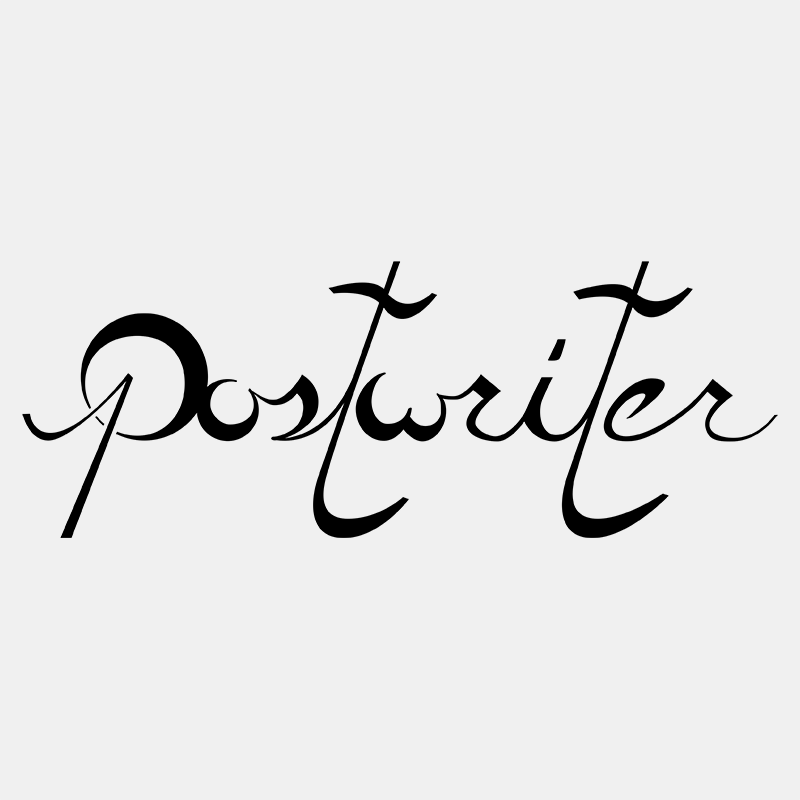

Postwriter Logo
Postwriter is a slam poetry/post rock duo from Austin, TX, the brain child of two of my friends: Dave Webber and Brandon Wilson. When they approached me for a logo, I had already been experimenting with caligraphic-styled letters, so the logo was an absolute joy to create.
 
